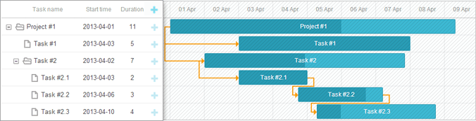

Specifying Columns
Grid's columns are configured with the columns parameter.

// default columns definition
gantt.config.columns = [
{name:"text", label:"Task name", width:"*", tree:true },
{name:"start_date", label:"Start time", align:"center" },
{name:"duration", label:"Duration", align:"center" },
{name:"add", label:"", width:44 }
];
You can take a look at the video guide that describes how to specify columns of the grid.
Overview
By default, the grid contains 4 columns:
- Task name
- Start date
- Duration
- '+' column. A special column with the
name="add"that displays the '+' sign which allows users to add children for a task.
Note, you needn't to specify the columns parameter to present the default columns in the grid.
The columns parameter is an array, each object of which presents a single column. So, for example, to define 5 columns in the grid: 'Task', 'Start Date', 'End Date', 'Holder', 'Progress', specify the columns parameter as in:
gantt.config.columns = [
{name:"text", label:"Task name", tree:true, width:"*" },
{name:"holder", label:"Holder", align:"center" },
{name:"start_date", label:"Start time", align:"center" },
{name:"end_date", label:"End date", align:"center" },
{name:"progress", label:"Progress", align:"center" },
];
gantt.init("gantt_here");
where 'text', 'holder', 'start_date', 'end_date', 'progress' are the names of the data properties.
Hiding the "Add" button for certain tasks
A quite easy way to prevent users from adding sub-tasks to specific tasks is to hide the 'Add' button through CSS.
- First, assign a CSS class for each task row using the grid_row_class template:
gantt.templates.grid_row_class = function( start, end, task ){ if ( task.$level > 1 ){ return "nested_task" } return ""; };
- Then, hide the 'Add' button for such rows:
.nested_task .gantt_add{ display: none !important; }
Related sample: Predefined Project Structure
Width
To set the width of a column, use the attribute width in the related column's object:
gantt.config.columns = [
{name:"text", label:"Task name", width:"*", tree:true },
{name:"start_date", label:"Start time", width:150 },
{name:"duration", label:"Duration", width:120 }
];
gantt.init("gantt_here");
Use the '*' value, to make the column occupy all the remaining space.
Min/max column width
The min_width/max_width properties can be used to limit the column width in case of resize operations:
gantt.config.columns = [
{name:"text", label:"Task name", width:"*", min_width: 150, max_width:300, tree:true},
{name:"start_date", label:"Start time", width:150 },
{name:"duration", label:"Duration", width:120 }
];
gantt.init("gantt_here");
Data mapping and templates
By default, dhtmlxGantt populates the grid with data properties that correspond to the names of the columns. For example, if you set name:"holder" for a column, dhtmlxGantt will look for a such data property in the incoming JSON data, and if such a property exists, load it to the column.
Using templates for column data
If you want to present a mix of several data properties in a column, you can use any name for the column, but set the data template via the template attribute of the columns parameter. For instance, you can specify name:"staff" for a column and define a template function that will return the holder and progress data properties to be loaded into the column.
gantt.config.columns = [
{name:"text", label:"Task name", tree:true, width:"*" },
{name:"start_date", label:"Start time", align: "center" },
{name:"staff", label:"Holder(s)", template:function(obj){
return obj.holder+"("+obj.progress+")"} }
];
gantt.init("gantt_here");
Text alignment
To set the horizontal alignment of the text in a column, use the align attribute in the related column's object:
gantt.config.columns = [
{name:"text", label:"Task name", tree:true, align:"center"},
{name:"start_date", label:"Start time", align: "center" },
{name:"duration", label:"Duration", align: "center" }
];
gantt.init("gantt_here");
WBS code
You can add a column that will display the outline numbers of tasks (their WBS code). For this, you need to use the getWBSCode method in the column template.
gantt.config.columns = [
{name:"wbs", label:"WBS", width:40, template:gantt.getWBSCode }, {name:"text", label:"Task name", tree:true, width:170 },
{name:"start_date", align:"center", width: 90},
{name:"duration", align:"center", width: 60},
{name:"add", width:40}
];
Related sample: Show Task WBS Codes (Outline Numbers)
Getting WBS code of the task
The getWBSCode method returns the WBS code of the necessary task. For example, we load the following tasks into gantt:
gantt.parse({
"tasks":[
{"id":1, "text":"Project #1", "start_date":"28-03-2020",
"duration":"11", "parent":"0", "open":true},
{"id":2, "text":"Task #1", "start_date":"01-04-2020",
"duration":"18", "parent":"1"},
{"id":3, "text":"Task #2", "start_date":"02-04-2020",
"duration":"8", "parent":"1"}
],
"links":[]
});
and we want to get the WBS code of the task with id=3. For this, we pass the object of a task as a parameter to the getWBSCode method. It will return a string with the WBS code of the task:
var wbs_code = gantt.getWBSCode(gantt.getTask(3)); // -> returns "1.2"
Getting task by WBS code
You can also get the object of a task by passing its WBS code to the getTaskByWBSCode method:
var task = gantt.getTaskByWBSCode("1.2");
// => {id:"t1", text:"Task #1, unscheduled: true, duration: 1, …}
Time constraints for tasks
This functionality is available only in the PRO edition
You can add separate grid columns that will allow setting the type of time constraint for a task and the date of constraint, if it is required by the chosen type. These columns have the "constraint_type" and "constraint_date" names, correspondingly.
gantt.config.columns = [
{
name:"constraint_type", align:"center", width:100,
template:function(task){//template logic},
resize: true, editor: constraintTypeEditor
},
{
name:"constraint_date", align:"center", width:120,
template:function(task){//template logic},
resize: true, editor: constraintDateEditor
},
{ name: "add", width: 44 }
];
The columns are linked to objects of inline editors that allow selecting the necessary type of constraint for a task and edit its date right in the grid.
var constraintTypeEditor = {
type: "select", map_to: "constraint_type", options: [
{ key: "asap", label: gantt.locale.labels.asap },
{ key: "alap", label: gantt.locale.labels.alap },
{ key: "snet", label: gantt.locale.labels.snet },
{ key: "snlt", label: gantt.locale.labels.snlt },
{ key: "fnet", label: gantt.locale.labels.fnet },
{ key: "fnlt", label: gantt.locale.labels.fnlt },
{ key: "mso", label: gantt.locale.labels.mso },
{ key: "mfo", label: gantt.locale.labels.mfo }
]
};
var constraintDateEditor = {
type:"date",
map_to:"constraint_date",
min:new Date(2019, 0, 1),
max:new Date(2020, 0, 1)
};
Related sample: Schedule From Project Start & Constraints
Resizing
The functionality below is available only in the PRO edition
To provide users a possibility to resize a column by dragging the right column's border, use the resize attribute in the related column's object:
gantt.config.columns = [
{name:"text", tree:true, width:"*",resize:true },//-> 'resize' active
{name:"start_date", resize:true, min_width:100 },//-> 'resize' limited by 'min_width'
{name:"duration", align:"center" }, //-> no resize
{name:"add", width:"44" }
];
Related sample: Resizable columns in grid
To make the whole grid resizable by dragging the grid's border, use the gantt.config.layout option and specify grid and resizer objects with the necessary configuration inside.
gantt.config.layout = {
css: "gantt_container",
rows:[
{
cols: [
{view: "grid", id: "grid", scrollX:"scrollHor", scrollY:"scrollVer"},
{resizer: true, width: 1},
{view: "timeline", id: "timeline", scrollX:"scrollHor", scrollY:"scrollVer"},
{view: "scrollbar", scroll: "y", id:"scrollVer"}
]
},
{view: "scrollbar", scroll: "x", id:"scrollHor", height:20}
]
};
gantt.init("gantt_here");
To preserve the grid's size during resizing of columns, set the keep_grid_width option to true:
gantt.config.columns = [
{ name:"text", tree:true, width:"*", resize:true },
{ name:"start_date", align:"center"},
{ name:"duration", align:"center", width:70 },
{ name:"add", width:44 }
];
gantt.config.keep_grid_width = true; gantt.init("gantt_here");
Related sample: Resizable columns in grid
Events
dhtmlxGantt provides 6 events for handling the resizing behavior:
- onColumnResizeStart - fires before the user starts to drag the column's border to resize the column
- onColumnResize - fires when the user is dragging the column's border to resize the column
- onColumnResizeEnd - fires after the user finished dragging the column's border to resize the column
- onGridResizeStart - fires before the user starts to drag the grid's border to resize the grid
- onGridResize - fires when the user is dragging the grid's border to resize the grid
- onGridResizeEnd - fires after the user finished dragging the grid's border to resize the grid
Visibility
To manipulate the visibility of a column, use the hide attribute in the related column's object.
Visibility can be toggled dynamically, by changing the value of the 'hide' property and refreshing the Gantt chart:
This functionality is available only in the PRO edition
Switching between basic and detailed view
gantt.config.columns = [
{name: "text", label: "Task name", width: "*", tree: true, resize: true },
{name: "start_date", label: "Start time" },
{name: "duration", label: "Duration", width: 60, hide:true }, {name: "planned_start", label: "Planned start", hide:true }, {name: "planned_end", label: "Planned end", width:80, hide:true }, {name: "add", label: "", width: 36 }
];
var show_details = false;
function toggleView(){
show_details = !show_details;
gantt.getGridColumn("duration").hide = !show_details;
gantt.getGridColumn("planned_start").hide = !show_details;
gantt.getGridColumn("planned_end").hide = !show_details;
if(show_details){
gantt.config.grid_width = 600;
}else{
gantt.config.grid_width = 300;
}
gantt.render();
};
gantt.init("gantt_here");
Related sample: Hiding grid columns
You can take a look at the video guide that demonstrates how to manage the visibility of columns in the grid.
Horizontal scrollbar
You can make Grid scrollable using the scrollable property of the layout configuration option. Read about binding layout views to a scrollbar.
The presence of a horizontal scrollbar in the grid allows Gantt to automatically adjust the width of the columns during resizing the width of the grid. Read more about how to enable this functionality.
In addition to the scrollable attribute, you need to add a horizontal scrollbar element into the layout and connect it to the grid as follows:
gantt.config.layout = {
css: "gantt_container",
cols: [
{
width:400,
min_width: 300,
// adding horizontal scrollbar to the grid via the scrollX attribute
rows:[
{view: "grid", scrollX: "gridScroll", scrollable: true, scrollY: "scrollVer"}, {view: "scrollbar", id: "gridScroll"} ]
},
{resizer: true, width: 1},
{
rows:[
{view: "timeline", scrollX: "scrollHor", scrollY: "scrollVer"},
{view: "scrollbar", id: "scrollHor"}
]
},
{view: "scrollbar", id: "scrollVer"}
]
};
Since you'll be displaying separate scrollbars for a grid and a timeline, you may want to synchronize their visibility, so both scrollbars would be visible or hidden at the same time.

It can be done by assigning both scrollbars to the same visibility group:
gantt.config.layout = {
css: "gantt_container",
cols: [
{
width:400,
min_width: 300,
rows:[
{view: "grid", scrollX: "gridScroll", scrollable: true, scrollY: "scrollVer"},
// horizontal scrollbar for the grid
{view: "scrollbar", id: "gridScroll", group:"horizontal"} ]
},
{resizer: true, width: 1},
{
rows:[
{view: "timeline", scrollX: "scrollHor", scrollY: "scrollVer"},
// horizontal scrollbar for the timeline
{view: "scrollbar", id: "scrollHor", group:"horizontal"} ]
},
{view: "scrollbar", id: "scrollVer"}
]
};
If at least one of the scrollbars assigned to the same group is visible, all scrollbars of the group will be visible.
Related sample: Horizontal scroll inside Grid
Styling
For information on styling cells of the grid, read Work with Gantt Styles.
Back to top